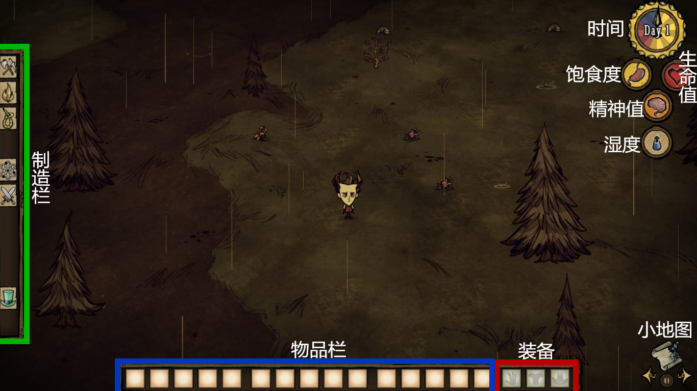
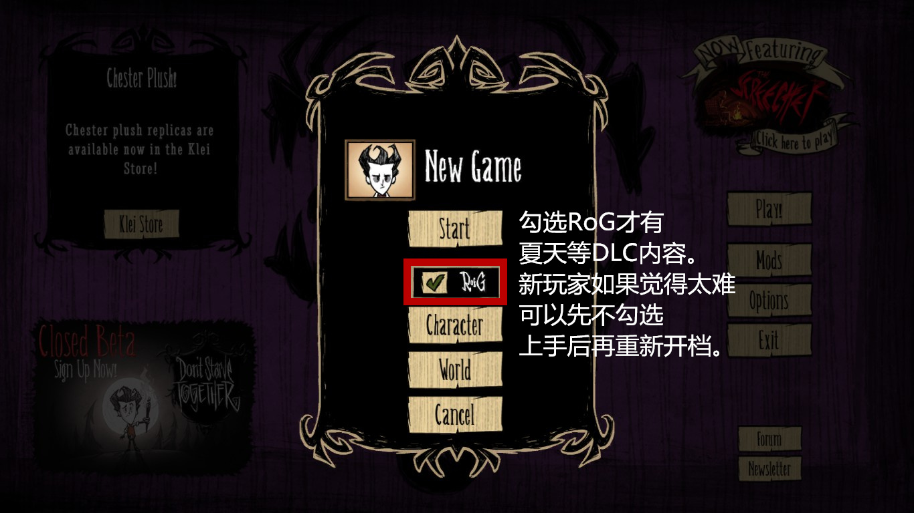
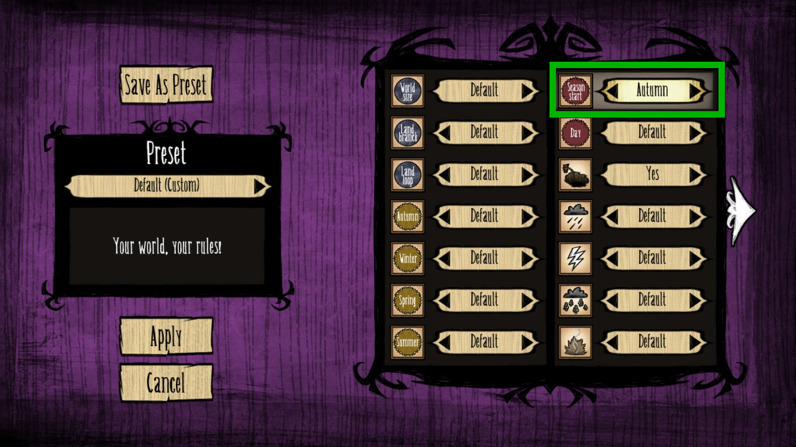
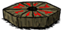
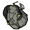
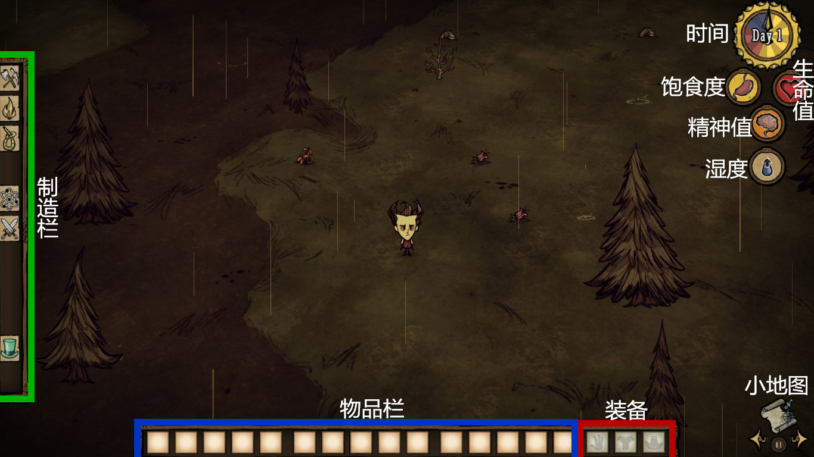
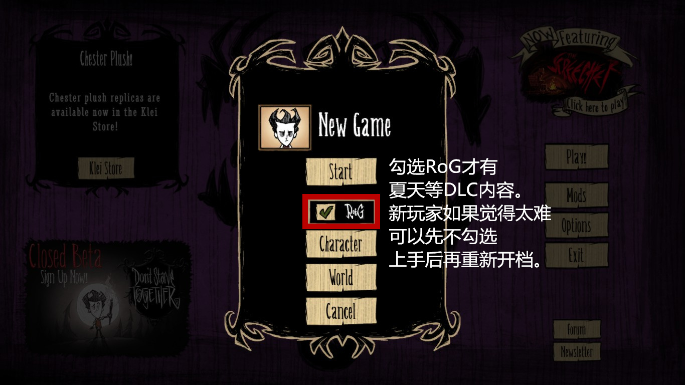
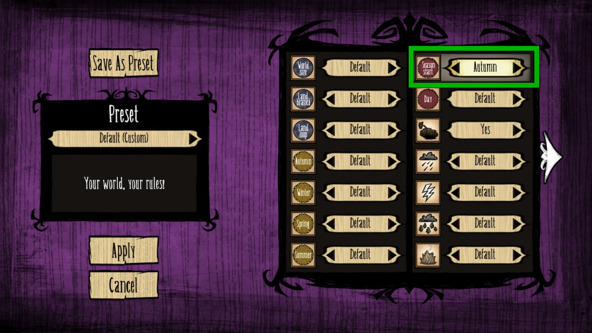
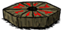
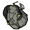

界面介绍

饱食度、生命值和精神值是游戏的三个基础指标。
饱食度：会随时间逐渐下降，当饱食度为0的时候，生命值会持续下降。
吃东西可以恢复饱食度。
生命值：当血量降为0时，人物会死亡。如果没有激活复活台，游戏将结束。
吃东西或者睡觉都可以恢复血量。
精神值：又称san值、脑残值。夜晚、跳虫洞、靠近怪物等都会持续降低精神值。当精神值降低到一定程度的时候，屏幕开始晃动，随后会出现影怪攻击你；当精神值降为0的时候，进入噩梦状态，屏幕剧烈摇晃且产生大量影怪。睡觉、用科学机器解锁新物品、吃糖可以恢复。
湿度：DLC新增的基础数值，显示在精神值下方。下雨会增加湿度，降低携带物使用效率(柴火)。穿着湿的衣服帽子，精神值会持续下降，角色身体温度也会降低。减少湿度的方法有：穿防水的衣服帽子，打伞，靠近篝火。如果使用机器人，湿度降为0之前会持续掉血。
基础操作
WASD操纵人物移动，Q和E是旋转视角。游戏中按ESC呼出菜单，Save and Quit是存档并退出。
shift查看物品，Tab键是呼出小地图(小地图界面游戏时间处于暂停状态，所以可以按Tab来暂停)
空格是捡取物品。F键是主动攻击身边的生物，按住F可以持续攻击。
鼠标左键：选取。放在生物上点左键为攻击。Ctrl+左键点击生物是强制攻击(对影怪无效)，Ctrl+左键点击物品是拆分。
鼠标右键：使用。可以装备物品和吃东西。
季节变更
游戏开局是随机春天或者秋天，然后四季轮回。推荐新手玩家调成秋天开局，毕竟DLC中的夏天比冬天困难许多。(World -> Season Start)

猎狗来袭
0~9天为2只猎狗，提前警告时间为120秒；10~24天3~4只猎狗，提前警告时间为60秒；25~49天4~6只，提前警告时间为45秒；50~99天为5~7只，提前警告时间为30秒；100天以上为7~10只，提前警告时间为30秒。前期较少的猎狗可以穿上三件套(长矛木甲猪皮帽)硬撸，之后数量多了可以通过制作陷阱或者引去其他群居生物处解决。
死亡经验
当人物死亡时，会弹出窗口显示存活天数(存活天数可以积累经验值，有些角色靠经验值解锁)。
这时该人物的存档已经被自动删除。选择main menu回到主菜单，retry即使用该人物重新开始游戏。
温度系统
游戏里有一个隐藏的基础数值——温度。
当温度过低时，屏幕周围会结冰，人物会持续掉血。可以通过靠近火堆或者燃烧的物品解除。
当温度过高时，屏幕周围会变黄，类似中暑，人物会持续掉血。可以通过靠近冰火堆或者吃降温食物来解除。
淘气值系统
击杀一些无害生物会增加淘气值，比如兔子、牛牛、高鸟、企鹅、猪人等。淘气值随着时间自动降低，1/8天减少一点。当淘气值累积到31~50中的某个值时，坎普斯会出现并偷走玩家基地的物品。杀死它有1%的几率掉落坎普斯背包，装备可提供14个额外的物品栏。
查理(黑夜怪物)
在完全的黑暗中出现并攻击玩家的隐形怪物，每隔几秒会攻击玩家一次。
所以晚上不点火完全是作死行为，请随时注意身上有足够的材料制作火把等照明物。
攻击力为100，每次攻击减少玩家精神值20。
基座
在探索地图的时候我们可能会遇到一些零件被恶魔花(颜色比较暗淡，捡一朵会降低5点精神值)围绕起来 。将这四个零件放置到基座上可以激活传送到下一个世界的大门。
。将这四个零件放置到基座上可以激活传送到下一个世界的大门。
游戏目标
很多新玩家接触饥荒不知道要干什么，其实很简单——活下去。
探索才是这个游戏最大的乐趣之一。你地图开完了吗？你基地建得足够豪华了吗？所有的小怪和boss你都挑战过了吗？所有的道具你都解锁了吗？洞穴你下过了吗？冒险模式通关了吗？
如何寻找游戏的乐趣还得靠自己发掘。

饱食度、生命值和精神值是游戏的三个基础指标。
饱食度：会随时间逐渐下降，当饱食度为0的时候，生命值会持续下降。
吃东西可以恢复饱食度。
生命值：当血量降为0时，人物会死亡。如果没有激活复活台，游戏将结束。
吃东西或者睡觉都可以恢复血量。
精神值：又称san值、脑残值。夜晚、跳虫洞、靠近怪物等都会持续降低精神值。当精神值降低到一定程度的时候，屏幕开始晃动，随后会出现影怪攻击你；当精神值降为0的时候，进入噩梦状态，屏幕剧烈摇晃且产生大量影怪。睡觉、用科学机器解锁新物品、吃糖可以恢复。
湿度：DLC新增的基础数值，显示在精神值下方。下雨会增加湿度，降低携带物使用效率(柴火)。穿着湿的衣服帽子，精神值会持续下降，角色身体温度也会降低。减少湿度的方法有：穿防水的衣服帽子，打伞，靠近篝火。如果使用机器人，湿度降为0之前会持续掉血。
基础操作
WASD操纵人物移动，Q和E是旋转视角。游戏中按ESC呼出菜单，Save and Quit是存档并退出。
shift查看物品，Tab键是呼出小地图(小地图界面游戏时间处于暂停状态，所以可以按Tab来暂停)
空格是捡取物品。F键是主动攻击身边的生物，按住F可以持续攻击。
鼠标左键：选取。放在生物上点左键为攻击。Ctrl+左键点击生物是强制攻击(对影怪无效)，Ctrl+左键点击物品是拆分。
鼠标右键：使用。可以装备物品和吃东西。
季节变更
游戏开局是随机春天或者秋天，然后四季轮回。推荐新手玩家调成秋天开局，毕竟DLC中的夏天比冬天困难许多。(World -> Season Start)

猎狗来袭
0~9天为2只猎狗，提前警告时间为120秒；10~24天3~4只猎狗，提前警告时间为60秒；25~49天4~6只，提前警告时间为45秒；50~99天为5~7只，提前警告时间为30秒；100天以上为7~10只，提前警告时间为30秒。前期较少的猎狗可以穿上三件套(长矛木甲猪皮帽)硬撸，之后数量多了可以通过制作陷阱或者引去其他群居生物处解决。
死亡经验
当人物死亡时，会弹出窗口显示存活天数(存活天数可以积累经验值，有些角色靠经验值解锁)。
这时该人物的存档已经被自动删除。选择main menu回到主菜单，retry即使用该人物重新开始游戏。
温度系统
游戏里有一个隐藏的基础数值——温度。
当温度过低时，屏幕周围会结冰，人物会持续掉血。可以通过靠近火堆或者燃烧的物品解除。
当温度过高时，屏幕周围会变黄，类似中暑，人物会持续掉血。可以通过靠近冰火堆或者吃降温食物来解除。
淘气值系统
击杀一些无害生物会增加淘气值，比如兔子、牛牛、高鸟、企鹅、猪人等。淘气值随着时间自动降低，1/8天减少一点。当淘气值累积到31~50中的某个值时，坎普斯会出现并偷走玩家基地的物品。杀死它有1%的几率掉落坎普斯背包，装备可提供14个额外的物品栏。
查理(黑夜怪物)
在完全的黑暗中出现并攻击玩家的隐形怪物，每隔几秒会攻击玩家一次。
所以晚上不点火完全是作死行为，请随时注意身上有足够的材料制作火把等照明物。
攻击力为100，每次攻击减少玩家精神值20。
基座
在探索地图的时候我们可能会遇到一些零件被恶魔花(颜色比较暗淡，捡一朵会降低5点精神值)围绕起来
。将这四个零件放置到基座上可以激活传送到下一个世界的大门。游戏目标
很多新玩家接触饥荒不知道要干什么，其实很简单——活下去。
探索才是这个游戏最大的乐趣之一。你地图开完了吗？你基地建得足够豪华了吗？所有的小怪和boss你都挑战过了吗？所有的道具你都解锁了吗？洞穴你下过了吗？冒险模式通关了吗？
如何寻找游戏的乐趣还得靠自己发掘。
新手初期生存发展的一些建议
开始旅程
进入游戏，发现主角从一片陌生的大陆上醒来。为了生存，开始了我们的饥荒之旅。
人物出生点是草地，周边资源很丰富，这时我们首先要做的便是探索地图和收集基础资源：
干草 ，小树枝
，小树枝 ，燧石
，燧石 。有了1个树枝和1个燧石就可以做斧子
。有了1个树枝和1个燧石就可以做斧子 了。装备斧子砍树收集一定量的木头
了。装备斧子砍树收集一定量的木头 。木头和干草是做一次性篝火
。木头和干草是做一次性篝火 的材料，一定要注意检查是否充足。
的材料，一定要注意检查是否充足。
然后一边收集基础资源，一边采集一些食物。初期的食物一般是浆果 胡萝卜
胡萝卜 ，鸟落地飞走后留下的种子
，鸟落地飞走后留下的种子 虽然补充饱食度很少，但也可以应急。
虽然补充饱食度很少，但也可以应急。
采浆果的时候偶尔会有火鸡 跳出来跟我们抢浆果，跑得又非常快，完全追不上！真的是新手最讨厌的生物之一了！这个时候不要去追，把身上的浆果放在地上引诱它们过来，然后在它们快走到浆果旁边的时候冲上去狂殴之~
跳出来跟我们抢浆果，跑得又非常快，完全追不上！真的是新手最讨厌的生物之一了！这个时候不要去追，把身上的浆果放在地上引诱它们过来，然后在它们快走到浆果旁边的时候冲上去狂殴之~
探索地图一般是沿着海边(即地图的边缘)进行，尽量探索出各种不同的地形(后面的地形篇有介绍)。
我们的目标是在前4~5天的时候把地图大概探索出来，选择周边资源丰富且靠近地图中心的地方建立基地。
当然，探索过程中如果遇到沼泽地和森林里大片的蜘蛛巢穴尽量避开走。
在天快黑之前选择一个安全且周围有一些资源的地方放置篝火。个人不太推荐新手晚上举着火把继续探图，因为火把的照明范围毕竟比较小，很容易一不小心就走到危险的区域了。把采集的食物放在篝火上烤熟了再吃可以增加更多的饱食度，但是烤过的食物保质期比生的短，所以尽量吃多少烤多少。吃饱之后可以顺便收集一下周围的资源，等待天亮继续出发。春天和秋天一个篝火就足够过夜了，不需要添加燃料(下雨除外)。

接下来的探索中要找的是矿区。用稿子 砸掉金矿
砸掉金矿 会获得石块
会获得石块 和金子
和金子 。
。
石头可以制造基地必要的石头篝火 。金子是制造科学机器(简称一本)
。金子是制造科学机器(简称一本) 的材料，有了一本我们才能解锁更多的道具。
的材料，有了一本我们才能解锁更多的道具。
精神值比较低的时候可以捡捡花，捡一朵花增加5点精神值。12朵花可以做一个花环 戴上花环白天可以缓慢增加精神，夜晚会减慢降低精神值的速度。
戴上花环白天可以缓慢增加精神，夜晚会减慢降低精神值的速度。
基地选址
在5~6天的时候我们就可以放下石头篝火、科学机器建立基地了。
好的基地要尽量满足的条件有：
1. 附近资源丰富(干草从小树枝浆果林都可以移植，树可以自己种)
2. 要有稳定的食物来源(例如兔子洞、牛群)
3. 靠近地图中心
饥荒的地图形状是以一个点往周围发散的，一般有4~5个分支。

推荐两个地方给新手玩家参考：
1. 靠近牛群。
牛群附近一般会有兔子洞，牛牛也可以提供各种有用的资源，比如牛毛(可以制作过冬需要的衣服和帽子，晚上用剃刀给牛牛剃毛获得)，粪便(用于施肥和篝火燃料)。杀死牛牛会掉落大肉和牛毛，有几率掉落牛角(牛角制作的牛帽是最好的保暖品)。而且猎狗来袭也可以引去牛群，让牛牛帮你解决。但是需要注意一点，基地不可以建得离牛群太近，因为牛牛在发情期(牛牛屁股变红)会主动攻击周围的所有生物。
2. 猪村附近
猪人是我们在饥荒世界里的好朋友。通过给猪人喂食可以让它们跟随我们，帮我们打怪砍树。猪村往往也会有几堆干草从和浆果林。同样需要注意满月，在天黑之前猪人如果没有回到自己的房子里就会变成疯猪。喂4块怪物肉给猪人也会让其变成疯猪。疯猪会不停地吃地上的食物，如果是蔬菜水果的话，吃完会拉便便，可以通过这个方法快速生产便便。杀死疯猪可以获得大肉和猪皮。
完善新家
在21天冬天来临之前，我们要尽可能完善基地，储备粮食，好舒适地度过第一个冬天。
一本二本不用说，必须要。解锁背包 ，装备后增加额外的8格物品栏。不需要随身携带的物品可以放在箱子
，装备后增加额外的8格物品栏。不需要随身携带的物品可以放在箱子 里。
里。
用铲子 移植干草从、浆果林和小树枝。移植后的干草从和浆果林需要使用大便施肥才能再收获。
移植干草从、浆果林和小树枝。移植后的干草从和浆果林需要使用大便施肥才能再收获。
 普通/高级农场：种种子可以随机收获各种蔬菜水果。由于冬天不能收获，不推荐第一个冬天之前制造。
普通/高级农场：种种子可以随机收获各种蔬菜水果。由于冬天不能收获，不推荐第一个冬天之前制造。

避雷针：必须在基地(移植的作物旁)放一个，不然下雨天一个闪电直接烧了基地就悲剧了。

烹饪锅：烹饪做出来的料理可以大幅提高饱食度。最常见的肉丸只需要1个肉3个浆果就做成，而且肉可以使用怪物肉，吃掉可以恢复62.5的饱食度！在DLC中放在锅上的食物也会随时间腐坏，建议做一个锅就够了，即吃即用。关于料理详情看食物篇。

晾肉架：可以制作肉干。肉干不仅回复三维，长保质期也很适合出去探险时携带。制作需要木炭，木炭通过砍烧过的树获得。(烧树：手拿火把右键点击树)

鸟笼：强烈推荐！探图的时候遇到沼泽，可以小心收集8个芦苇 。之后用捕鸟器
。之后用捕鸟器 加上种子作诱饵捉一只鸟养着。给鸟喂食种子会随机获得作物种子；给鸟喂食肉(生的怪物肉也可以)可以获得蛋。蛋的保质期快到了烤熟喂鸟又能换一个满新鲜度的蛋。
加上种子作诱饵捉一只鸟养着。给鸟喂食种子会随机获得作物种子；给鸟喂食肉(生的怪物肉也可以)可以获得蛋。蛋的保质期快到了烤熟喂鸟又能换一个满新鲜度的蛋。
 蜂箱：在蜂箱附近种植花朵可以生产蜂蜜(用捕虫网
蜂箱：在蜂箱附近种植花朵可以生产蜂蜜(用捕虫网 捉活的蝴蝶，右键点击地板种植花朵)。蜂蜜可以回血回饱食度，保质期长达40天。还可以做太妃糖回复精神值。产蜜速度跟周围花朵数量有关，冬天停止产蜜。
捉活的蝴蝶，右键点击地板种植花朵)。蜂蜜可以回血回饱食度，保质期长达40天。还可以做太妃糖回复精神值。产蜜速度跟周围花朵数量有关，冬天停止产蜜。

冰箱：装备好长矛 木甲
木甲 猪皮帽
猪皮帽 去打发条骑士
去打发条骑士 发条主教
发条主教 获得齿轮
获得齿轮 制作冰箱。放在冰箱里的食物保质期会延长。
制作冰箱。放在冰箱里的食物保质期会延长。

帐篷：可以在黄昏或夜晚睡觉。第二天醒来减少75点饱食度，增加50点精神值60点血。可以用6次。食物充足的情况下回血回精神值都很不错。在使用了5次之后可用锤子 砸掉可以返还一半的制造材料。
砸掉可以返还一半的制造材料。
准备入冬
冬天面临的挑战有很多：食物紧缺、植物停止生长或生长周期变长、蜂箱不产蜜、黑夜变长、温度降低。所以一定要在入冬以前准备好足够多的资源来应付冬天的严酷。在冬天，当温度降到一定数值屏幕周围会结冰，人物会持续掉血，此时需要靠近火源升温。下面是一些保温(减缓温度降低速度)的道具。
 暖石：放在篝火旁边烤热(最热为橙黄色)，然后携带在身上可以保温(注意放在背包里没有保温效果)。
暖石：放在篝火旁边烤热(最热为橙黄色)，然后携带在身上可以保温(注意放在背包里没有保温效果)。


 从左至右分别是：兔子耳罩、冬帽、牛帽。保温效果依次递增。
从左至右分别是：兔子耳罩、冬帽、牛帽。保温效果依次递增。

 微风背心/厚实背心由两种大象鼻子制造。由于不能和背包同时装备，取舍看个人。
微风背心/厚实背心由两种大象鼻子制造。由于不能和背包同时装备，取舍看个人。
冬天也还是要出门探索的，食物来源最方便的就是陷阱放兔子洞口每天收一次，其次打打蜘蛛什么的也不错。其实每一个季节所要做的就是为安稳度过下一个季节做准备。可以收集材料做一些防雨的装备(雨伞雨衣雨帽)，更重要的是在冬天可以砸掉冰山 获得冰块为夏天做准备。冰山在春天便会开始融化，在冬天体积是最大的，所以冬天收集冰块是再好不过了。只要把冰块放冰箱里就不会融化了。
获得冰块为夏天做准备。冰山在春天便会开始融化，在冬天体积是最大的，所以冬天收集冰块是再好不过了。只要把冰块放冰箱里就不会融化了。
冬天有几率出现Boss巨鹿，它会摧毁玩家的基地，来袭前会听到一阵阵喘息声。如果来了为了守卫家园也只能穿上三件套跟它拼了！(后面的生物篇有介绍打法)
猪皮帽的制作需要猪皮 ，通过杀死疯猪、用锤子砸掉猪人房和复活台
，通过杀死疯猪、用锤子砸掉猪人房和复活台 周围的猪头
周围的猪头 获得。杀死猪人有25%的几率掉落。
获得。杀死猪人有25%的几率掉落。
当第一个冬天熬过去，就代表上手了，之后就要靠自己摸索了~
进入游戏，发现主角从一片陌生的大陆上醒来。为了生存，开始了我们的饥荒之旅。
人物出生点是草地，周边资源很丰富，这时我们首先要做的便是探索地图和收集基础资源：
干草
，小树枝，燧石。有了1个树枝和1个燧石就可以做斧子了。装备斧子砍树收集一定量的木头。木头和干草是做一次性篝火的材料，一定要注意检查是否充足。然后一边收集基础资源，一边采集一些食物。初期的食物一般是浆果
胡萝卜，鸟落地飞走后留下的种子虽然补充饱食度很少，但也可以应急。采浆果的时候偶尔会有火鸡
跳出来跟我们抢浆果，跑得又非常快，完全追不上！真的是新手最讨厌的生物之一了！这个时候不要去追，把身上的浆果放在地上引诱它们过来，然后在它们快走到浆果旁边的时候冲上去狂殴之~探索地图一般是沿着海边(即地图的边缘)进行，尽量探索出各种不同的地形(后面的地形篇有介绍)。
我们的目标是在前4~5天的时候把地图大概探索出来，选择周边资源丰富且靠近地图中心的地方建立基地。
当然，探索过程中如果遇到沼泽地和森林里大片的蜘蛛巢穴尽量避开走。
在天快黑之前选择一个安全且周围有一些资源的地方放置篝火。个人不太推荐新手晚上举着火把继续探图，因为火把的照明范围毕竟比较小，很容易一不小心就走到危险的区域了。把采集的食物放在篝火上烤熟了再吃可以增加更多的饱食度，但是烤过的食物保质期比生的短，所以尽量吃多少烤多少。吃饱之后可以顺便收集一下周围的资源，等待天亮继续出发。春天和秋天一个篝火就足够过夜了，不需要添加燃料(下雨除外)。
接下来的探索中要找的是矿区。用稿子
砸掉金矿会获得石块和金子。石头可以制造基地必要的石头篝火
。金子是制造科学机器(简称一本)的材料，有了一本我们才能解锁更多的道具。精神值比较低的时候可以捡捡花，捡一朵花增加5点精神值。12朵花可以做一个花环
戴上花环白天可以缓慢增加精神，夜晚会减慢降低精神值的速度。基地选址
在5~6天的时候我们就可以放下石头篝火、科学机器建立基地了。
好的基地要尽量满足的条件有：
1. 附近资源丰富(干草从小树枝浆果林都可以移植，树可以自己种)
2. 要有稳定的食物来源(例如兔子洞、牛群)
3. 靠近地图中心
饥荒的地图形状是以一个点往周围发散的，一般有4~5个分支。
推荐两个地方给新手玩家参考：
1. 靠近牛群。
牛群附近一般会有兔子洞，牛牛也可以提供各种有用的资源，比如牛毛(可以制作过冬需要的衣服和帽子，晚上用剃刀给牛牛剃毛获得)，粪便(用于施肥和篝火燃料)。杀死牛牛会掉落大肉和牛毛，有几率掉落牛角(牛角制作的牛帽是最好的保暖品)。而且猎狗来袭也可以引去牛群，让牛牛帮你解决。但是需要注意一点，基地不可以建得离牛群太近，因为牛牛在发情期(牛牛屁股变红)会主动攻击周围的所有生物。
2. 猪村附近
猪人是我们在饥荒世界里的好朋友。通过给猪人喂食可以让它们跟随我们，帮我们打怪砍树。猪村往往也会有几堆干草从和浆果林。同样需要注意满月，在天黑之前猪人如果没有回到自己的房子里就会变成疯猪。喂4块怪物肉给猪人也会让其变成疯猪。疯猪会不停地吃地上的食物，如果是蔬菜水果的话，吃完会拉便便，可以通过这个方法快速生产便便。杀死疯猪可以获得大肉和猪皮。
完善新家
在21天冬天来临之前，我们要尽可能完善基地，储备粮食，好舒适地度过第一个冬天。
一本二本不用说，必须要。解锁背包
，装备后增加额外的8格物品栏。不需要随身携带的物品可以放在箱子里。用铲子
移植干草从、浆果林和小树枝。移植后的干草从和浆果林需要使用大便施肥才能再收获。普通/高级农场：种种子可以随机收获各种蔬菜水果。由于冬天不能收获，不推荐第一个冬天之前制造。避雷针：必须在基地(移植的作物旁)放一个，不然下雨天一个闪电直接烧了基地就悲剧了。
烹饪锅：烹饪做出来的料理可以大幅提高饱食度。最常见的肉丸只需要1个肉3个浆果就做成，而且肉可以使用怪物肉，吃掉可以恢复62.5的饱食度！在DLC中放在锅上的食物也会随时间腐坏，建议做一个锅就够了，即吃即用。关于料理详情看食物篇。
晾肉架：可以制作肉干。肉干不仅回复三维，长保质期也很适合出去探险时携带。制作需要木炭，木炭通过砍烧过的树获得。(烧树：手拿火把右键点击树)
鸟笼：强烈推荐！探图的时候遇到沼泽，可以小心收集8个芦苇
。之后用捕鸟器加上种子作诱饵捉一只鸟养着。给鸟喂食种子会随机获得作物种子；给鸟喂食肉(生的怪物肉也可以)可以获得蛋。蛋的保质期快到了烤熟喂鸟又能换一个满新鲜度的蛋。蜂箱：在蜂箱附近种植花朵可以生产蜂蜜(用捕虫网捉活的蝴蝶，右键点击地板种植花朵)。蜂蜜可以回血回饱食度，保质期长达40天。还可以做太妃糖回复精神值。产蜜速度跟周围花朵数量有关，冬天停止产蜜。冰箱：装备好长矛
木甲猪皮帽去打发条骑士 发条主教获得齿轮制作冰箱。放在冰箱里的食物保质期会延长。帐篷：可以在黄昏或夜晚睡觉。第二天醒来减少75点饱食度，增加50点精神值60点血。可以用6次。食物充足的情况下回血回精神值都很不错。在使用了5次之后可用锤子
砸掉可以返还一半的制造材料。准备入冬
冬天面临的挑战有很多：食物紧缺、植物停止生长或生长周期变长、蜂箱不产蜜、黑夜变长、温度降低。所以一定要在入冬以前准备好足够多的资源来应付冬天的严酷。在冬天，当温度降到一定数值屏幕周围会结冰，人物会持续掉血，此时需要靠近火源升温。下面是一些保温(减缓温度降低速度)的道具。
暖石：放在篝火旁边烤热(最热为橙黄色)，然后携带在身上可以保温(注意放在背包里没有保温效果)。从左至右分别是：兔子耳罩、冬帽、牛帽。保温效果依次递增。微风背心/厚实背心由两种大象鼻子制造。由于不能和背包同时装备，取舍看个人。冬天也还是要出门探索的，食物来源最方便的就是陷阱放兔子洞口每天收一次，其次打打蜘蛛什么的也不错。其实每一个季节所要做的就是为安稳度过下一个季节做准备。可以收集材料做一些防雨的装备(雨伞雨衣雨帽)，更重要的是在冬天可以砸掉冰山
获得冰块为夏天做准备。冰山在春天便会开始融化，在冬天体积是最大的，所以冬天收集冰块是再好不过了。只要把冰块放冰箱里就不会融化了。冬天有几率出现Boss巨鹿，它会摧毁玩家的基地，来袭前会听到一阵阵喘息声。如果来了为了守卫家园也只能穿上三件套跟它拼了！(后面的生物篇有介绍打法)
猪皮帽的制作需要猪皮
，通过杀死疯猪、用锤子砸掉猪人房和复活台周围的猪头获得。杀死猪人有25%的几率掉落。当第一个冬天熬过去，就代表上手了，之后就要靠自己摸索了~
地形篇——你看过了许多美景
 森林Forest
森林Forest很常见的一种地形，分布在地图各处。拥有大量的常青树和小树枝。
森林里的蜘蛛巢
 往往比较集中，探索时需注意。
往往比较集中，探索时需注意。下雨天如果在森林附近的话，要注意闪电可能会引起森林大火。
 草地Grasslands
草地Grasslands角色出生的地形，相对比较安全而且资源丰富。需要注意的是池塘
 周围刷新的青蛙
周围刷新的青蛙 ，每次被攻击会掉落物品栏最左边格子里的物品，而且青蛙是群体仇恨比较难缠。同样需要注意春天普通蜜蜂会变成主动攻击的杀人蜂
，每次被攻击会掉落物品栏最左边格子里的物品，而且青蛙是群体仇恨比较难缠。同样需要注意春天普通蜜蜂会变成主动攻击的杀人蜂
一大片杀人蜂巢
 通常会堵在路口，不要硬闯。
通常会堵在路口，不要硬闯。 平原Savanna
平原Savanna平原有大量的干草从和兔子洞，牛群
 也只会出现在平原(可以通过使用牛角
也只会出现在平原(可以通过使用牛角 让牛群迁移)。大量的可再生资源(牛牛也会繁殖变多)很适合建立基地。需要注意牛牛在发情期(屁屁变红)会主动攻♂击周围其他一切生物，戴上牛帽不会被攻击。
让牛群迁移)。大量的可再生资源(牛牛也会繁殖变多)很适合建立基地。需要注意牛牛在发情期(屁屁变红)会主动攻♂击周围其他一切生物，戴上牛帽不会被攻击。 沼泽Marsh
沼泽Marsh沼泽是最危险的地形，有大量怪物：触手
 、鱼人
、鱼人 和蜘蛛
和蜘蛛触手平时隐藏在地下(可以隐约看到地面有一些泡泡)，人物靠近时才会出现，所以在沼泽中一定要保持移动。危险不代表不探索，芦苇和触手掉落的狼牙棒都是很实用的物品。
 矿区Rockyland
矿区Rockyland有大量的石矿
 和金矿
和金矿由于科学机器和很多物品都要金子制作，需要游戏开始后尽快找到矿区。
除了蜘蛛，高鸟
 同样比较危险。靠近它的巢穴会被攻击；如果偷了蛋
同样比较危险。靠近它的巢穴会被攻击；如果偷了蛋
它会一直追着你打。高鸟蛋可以做料理或者孵化出小高鸟跟随玩家。
 混合地形Mosaic
混合地形Mosaic随机各种地形出现在同一块区域上。
 棋盘Chess
棋盘Chess基座
 周围的一种地形。该地形出现的花均为恶魔花
周围的一种地形。该地形出现的花均为恶魔花 ，靠近和采摘都会减少精神值。有发条骑士发条主教发条战车
，靠近和采摘都会减少精神值。有发条骑士发条主教发条战车 三种主动攻击的危险生物。其中发条主教是远程攻击的怪物，没有装备防具时尽量不要靠近此地形。
三种主动攻击的危险生物。其中发条主教是远程攻击的怪物，没有装备防具时尽量不要靠近此地形。 海洋Ocean
海洋Ocean地图边缘不可用的地方即为海洋。
冬天靠近海边走会有企鹅群
 跳上陆地安家，春天撤回海洋。企鹅不会主动攻击但是属于群体仇恨，不要作死去打企鹅。
跳上陆地安家，春天撤回海洋。企鹅不会主动攻击但是属于群体仇恨，不要作死去打企鹅。 墓地Graveyard
墓地Graveyard墓地一般出现在森林附近，有大量的墓碑
 ，用铲子挖墓碑有10%的几率出现鬼魂
，用铲子挖墓碑有10%的几率出现鬼魂 。有几率获得红蓝宝石齿轮噩梦燃料。还有大几率获得装饰品
。有几率获得红蓝宝石齿轮噩梦燃料。还有大几率获得装饰品 装饰品可以拿给猪王
装饰品可以拿给猪王 换取金子。
换取金子。 沙漠Desert
沙漠DesertDLC新增地形之一。有较多的石矿
 和仙人掌
和仙人掌 。采摘仙人掌会受到6点伤害(装备防具可减少伤害)，收获的仙人掌肉
。采摘仙人掌会受到6点伤害(装备防具可减少伤害)，收获的仙人掌肉 可以制作料理。在夏天采摘仙人掌还可以收获仙人掌花
可以制作料理。在夏天采摘仙人掌还可以收获仙人掌花 ，用来制作防暑衬衫。
，用来制作防暑衬衫。 落叶森林Deciduous Forest
落叶森林Deciduous ForestDLC新增地形之一。类似森林，有大量的落叶树
 和蘑菇
和蘑菇 。砍掉落叶树获得的果实
。砍掉落叶树获得的果实 烤熟了可以吃，很好的应急品。狸猫巢
烤熟了可以吃，很好的应急品。狸猫巢 会刷新狸猫
会刷新狸猫
给予物品会跟随玩家，每个巢只能刷新9只狸猫，是不可生资源。神秘生物六眼飞鱼
 满月时在
满月时在 处刷新，摘掉此处的花朵
处刷新，摘掉此处的花朵 它会跟随你(详细看生物篇)。
它会跟随你(详细看生物篇)。
四季篇——Four scene, four four seasons
秋高气爽
World设定中选Default默认的话，秋天持续时间为20天。秋天有一半时间为白天，夜晚通常只有一天1/6~1/5的长度。
不会出现过热和冰冻现象，可能会下雨。猎狗来袭有几率出现火狗。
草地呈现出暗绿色。

落叶树是彩色的。砍掉之后会掉落两个果实，其他季节是一个。

总结与应对：
秋天是一个非常舒适的季节，所有作物正常生长，食物也比较丰富。所以推荐新手玩家秋天开局，为接下来的其他季节打好基础。唯一需要注意的是，有几率出现秋季BOSS狗熊，它会四处寻找食物，可以摧毁基地，打法在生物篇里有介绍。BOSS掉落的材料可以制作过冬背心
 ，是很不错的防寒品。
，是很不错的防寒品。寒冬凛凛
World设定中选Default默认的话，冬天持续时间为16天。冬天的白天、黄昏和夜晚各占一天中的1/3。
食物腐烂速度变得比平时慢25%；鸟和兔子的颜色都变成白色；落叶树只剩下树干；蜜蜂不会再出来采蜜(杀人蜂在冬天不会停止活动)；农场停止生长，干草从浆果林小树枝生长速度变慢。冰山在冬天体积最大(砸掉可以获得最多的冰块)。
冬天的猎狗来袭将只出现冰狗。海象父子开始外出活动。靠近海边走会有几率出现企鹅上岸安家。
草地呈现出淡蓝色，且被白雪覆盖。

冻伤：当人物温度降低到一定的程度，屏幕周围会结冰，生命值持续下降。

总结与应对：
冬天的主要难点在于食物和作物的稀缺，以及精神值的问题。
食物可以依靠兔子、打蜘蛛获得怪物肉等烹饪制作肉丸解决，问题不是很大。干草和小树枝要在入冬之前多屯一些，否则无法制作火把和一次性篝火。常青树依然正常生长所以不用担心燃料问题。
由于白天短，一天中大半天精神值都处于下降状态，所以制作帐篷回复精神值是必要的。还可以通过吃肉干、太妃糖回复精神值。
保暖道具包括暖石、兔子耳罩冬帽牛帽、微风背心厚实背心(在第三章有介绍)，装备这些道具可以延长外出时间。冬天外出，当屏幕开始结冰时，就需要放置一次性篝火让身体升温。
冬天可以多砸一些冰山收集冰块放冰箱里，为夏天做准备。
击杀海象有几率掉落贝雷帽
 ，可以保温和缓慢增加精神值。掉落的海象牙可以制作行动手杖
，可以保温和缓慢增加精神值。掉落的海象牙可以制作行动手杖 ，装备后可以提高25%的移动速度。
，装备后可以提高25%的移动速度。冬天有几率出现冬季BOSS巨鹿，它会摧毁基地，打法在生物篇里有介绍。BOSS掉落的材料制作的眼球雨帽
 是非常好的防雨品。
是非常好的防雨品。春雨绵绵
World设定中选Default默认的话，春天持续时间为20天。春天黄昏几乎占了一天中的1/2，白天和夜晚约各占1/4，白天比夜晚长。
兔子洞坍塌，兔子将不会出来(可以用铲子铲掉坍塌的兔子洞可以把兔子逼出来，只是这样做会让该兔子洞消失不再刷新兔子)；落叶树不同于秋天，是绿色的；所有蜜蜂都会变得具有攻击性；牛群开始发情；经常下雨使得植物生长周期变短。冰山开始融化，体积变得比冬天小一些。
猎狗来袭仍然可能出现冰狗。
草地呈现出绿色。

下雨：春天经常下雨，下雨会增加人物湿度。湿度越高，精神值下降越快，且有可能会被冻伤。湿润的武器有几率在使用时从手中滑落。下雨一定会伴随闪电，注意不要引起森林大火。下雨会使火把和篝火灭得很快。
青蛙雨：春天有几率下青蛙雨，即一大片青蛙突然降落在玩家身边。如果遇到赶紧远离；也可以引诱青蛙群与附近其他邪恶生物混战。
总结与应对：
春天必须要制作一些防雨的道具，花伞
 和雨伞
和雨伞 ，雨衣
，雨衣 雨帽
雨帽 ，眼球雨帽。
，眼球雨帽。春天有几率出现春季BOSS大鹅，相比其他季节的BOSS较弱，比较难缠的是产的蛋里的小鹅，打法在生物篇里有介绍。BOSS掉落材料制作的羽毛扇
 是防暑降温灭火的利器。
是防暑降温灭火的利器。夏日炎炎
World设定中选Default默认的话，夏天持续时间为16天。夏天白天占了一天中的1/2~2/3，夜晚占约1/4。
食物腐烂速度变得比平时快25%；鸟的颜色变成红色；兔子洞和蜜蜂恢复正常；农场会枯萎，收获获得一个干草；干草从浆果林小树枝都会枯萎
 ，需要重新施肥才能收获。冰山融化，砸掉只能获得很少的冰块。
，需要重新施肥才能收获。冰山融化，砸掉只能获得很少的冰块。猎狗来袭将只出现火狗。
草地呈现出黄色。

中暑：当人物温度升高到一定的程度，屏幕周围会泛黄光，生命值持续下降。

总结与应对：
夏天需要降温，所以要制作冰火堆
 。一次性冰火堆
。一次性冰火堆 需要硝石
需要硝石 制作，要随身准备几个。
制作，要随身准备几个。西瓜帽
 、防暑背心
、防暑背心 和夏日背心
和夏日背心 都是不错的防暑装备。不推荐冰立方
都是不错的防暑装备。不推荐冰立方 ，装备之后会减慢移动速度和增加湿度。暖石可以放在冰火堆或冰箱里冻成白色
，装备之后会减慢移动速度和增加湿度。暖石可以放在冰火堆或冰箱里冻成白色 带在身上出门。凉棚
带在身上出门。凉棚 只能在白天使用，恢复60点生命值和50点精神值、减少25点饱食度，在黄昏醒来并降低人物体温。外出时中暑了要及时放置冰火堆降温。
只能在白天使用，恢复60点生命值和50点精神值、减少25点饱食度，在黄昏醒来并降低人物体温。外出时中暑了要及时放置冰火堆降温。夏天所有东西都有可能会自燃，需要制作灭火器
 放在基地(灭火器同样可以使枯萎的浆果林、小树枝和干草从变回原样)。推荐新手玩家直接在world设定中关掉自燃
放在基地(灭火器同样可以使枯萎的浆果林、小树枝和干草从变回原样)。推荐新手玩家直接在world设定中关掉自燃 。
。夏天有几率出现夏季BOSS龙蝇，范围性攻击会使周围物体着火，尽量引至空旷的地方再打，打法在生物篇里有介绍。BOSS掉落的材料可以制作防火护甲和防火箱子。
四季BOSS
※巨鹿※

类型：敌对
出没地点：冬季BOSS，来临前玩家可以听到喘息声。春天消失。
生命值：2000
攻击力：75(对玩家), 150(对其他生物)
攻击间隔：3
攻击范围：8
移动速度：3
精神影响：-400/分钟
特殊能力：范围攻击，可以摧毁建筑物。DLC中攻击附带冰冻效果。
抗性：冰杖攻击4次使其冻结；睡眠吹箭攻击4次催眠它。
战利品： ×8,
×8,
击杀方法：
1. 吸引仇恨后打2走1，切换行动手杖可以打3走1。
2. 用方法1打完经常会进入噩梦状态比较危险，满血也可以准备两套护甲和补血料理站撸。
3. 利用火药 (10炸药炸死无眼球；9炸药非灼烧状态补刀可以获得全部战利品)
(10炸药炸死无眼球；9炸药非灼烧状态补刀可以获得全部战利品)
4. 利用树人群可以较轻松的解决。不推荐让牛群帮忙打巨鹿，很容易被团灭。
5. 使用巨人铃铛 快速秒杀。(制作材料由六眼飞鱼掉落)
快速秒杀。(制作材料由六眼飞鱼掉落)
6. 龙蝇免疫火焰伤害(火焰吹箭，火杖)；由于会飞，狗牙陷阱同样不能对其造成伤害。
小结：
1. 巨鹿对建筑物的仇恨值比对玩家的大，它会首先拆掉基地。
2. DLC中巨鹿攻击附带冰冻效果，被击中后人物会变浅蓝色，此时再被连续击中两次会冻结数秒。
3. 战斗前要把暖石温度烤至最高，战斗最好在篝火附近。
4. 掉落的眼球可以恢复60点生命值和75点饱食度，同时减少15点精神值。制作的眼球伞在春天可以很好地防雨水。
附上：巨鹿打法大全[tieba.baidu.com]
※驼鹿※

类型：敌对
出没地点：春季BOSS。DLC中春天2~4天时出现在玩家基地附近，并会产下一个巨大的蛋。夏天飞走。
生命值：3000
攻击力：75(对玩家), 150(对其他生物)
攻击间隔：3
攻击范围：5.5
移动速度：8, 12(战斗时)
特殊能力：攻击几次后会发出尖叫，可以震落玩家的武器。
战利品：x6, x2,
x2, (3~5)
(3~5)
击杀方法：
1. 没有小鹅的时候，打3走1。武器被震落后记得及时捡起。
2. 利用狗牙陷阱阵和其他生物协助击杀。
3. 利用睡眠吹箭和火药(14个然后补刀)可以快速击杀。
4. 睡眠吹箭和巨人铃铛3下秒杀。
小结：
1. 同样可以摧毁玩家的基地，但是并不像巨鹿那样对建筑物有很大仇恨值。
2. 没有精神惩罚，所以只要耐心点，这个boss非常好打。
3. 尽量在蛋没有孵化之前解决这个boss，小鹅很难缠。
4. 掉落的羽毛可以制作风湿痛和羽毛扇，羽毛扇用于降温和灭火，在夏天可以很有效地预防中暑。
※驼鹿蛋※

由驼鹿产下。用锤子砸4下可以使它孵化，砸的同时会对玩家造成10点伤害。也可以使用风湿痛来无伤破坏掉蛋。破坏后会孵化出5只小鹅，驼鹿巢保留，在春天仍然可能继续刷新驼鹿并在巢上下蛋。蛋和巢穴在夏天会消失。
※小鹅※

类型：中立
出没地点：由驼鹿蛋孵化
生命值：350
攻击力：50
攻击间隔：3
攻击范围：2
移动速度：5
特殊能力：当被激怒时变成红色，会快速旋转攻击玩家，并且召唤雨和闪电。
战利品：,,x2~3(133%)
击杀方法：
1. 利用狗牙陷阱和其他生物协助击杀。
2. 由于小鹅硬直高，受伤也会继续旋转攻击，三件套硬撸的话请一只一只解决。
小结：
1. 小鹅是群体仇恨，当驼鹿被攻击或击杀后会主动攻击玩家。如果是玩家用锤子砸掉蛋之后孵化的也会攻击玩家。
2. 小鹅会主动觅食，吃掉各种食物。吃了怪物肉和红蘑菇之后会受到伤害。
※龙蝇※

类型：敌对
出没地点：夏季BOSS。DLC中夏天出现，会被落叶树果实吸引。秋天消失。
生命值：2750
攻击力：75, 37.5x3(112.5, 火焰三连击)(对玩家)；150, 75x3(225, 火焰三连击)(对其他生物)
攻击间隔：2.5
攻击范围：4
移动速度：4, 2(刚解冻时)
精神影响：-400/分钟
特殊能力：火焰三连击；被火焰环绕，可以点燃周围可燃物，对周围生物造成火焰伤害。
战利品：x8,
击杀方法：
1. 先走过去攻击一下吸引仇恨然后立马躲开它的三连击，之后打4走1(每次3连击之间间隔的两次普通攻击穿上护甲硬抗，准备好三个护甲和两个头盔)。不太推荐这个方法。
2. 在附近种好树，在树旁边放14个火药，龙蝇会自己飞过去烧树然后被炸死。由于它免疫火焰伤害，所以炸药不会烧毁战利品。
3. 使用睡眠吹箭和14个火药或巨人铃铛可以快速安全地击杀。
4. 借助狗牙陷阱或触手群、树人等生物帮忙击杀。不要让猪人和牛群帮忙打，两下就会被团灭。
小结：
1. 龙蝇会四处游走喷火烧毁植被和建筑物，它很爱吃灰烬 。
。
2. 龙蝇其实是相对中立的生物，不会主动攻击玩家。当被激怒时变成橙红色，附带燃烧光环。
3. 它的移动速度快加上攻击范围广，只要暴怒就躲不掉它的攻击了(无行动手杖)。
4. 靠近它会受到火焰伤害持续掉血，两种攻击也附带燃烧效果。三连击会点燃范围内的可燃物。
5. 可以使用冰杖或灭火器解除它的暴怒状态，解除后龙蝇又变回中立。
6. 掉落的鳞片可以制作防火护甲 和防火宝箱
和防火宝箱
※熊獾※

类型：敌对
出没地点：秋季BOSS。
生命值：3000
攻击力：100(对玩家), 200(对其他生物)
攻击间隔：3
攻击范围：6
移动速度：3, 6(战斗时), 10(追击玩家短距离冲刺时)
精神影响：-400/分钟
特殊能力：攻击可以击落玩家的武器，范围攻击。四处觅食，会主动吃掉农场的作物并摧毁农场，会摧毁箱子和冰箱并吃掉里面的食物。
战利品：x8, 
击杀方法：
1. 打2走1。它挥爪攻击3次后会震地板，躲开后回头勾引它挥爪攻击之后循环打2走1。
2. 利用睡眠吹箭和14个火药(需要补刀)或巨人铃铛可以快速击杀。
3. 借助触手群等生物帮忙击杀。不要让猪人和牛群帮忙打，两下就会被团灭。
4. 可以把它引到附近的森林里，震地板攻击可以砍掉周围的树，很容易出现树人守卫，之后就可以轻松收获木头和战利品了。
小结：
1. 由于熊獾的大范围攻击可以摧毁周围的建筑物，它可以比巨鹿更加迅速地拆掉玩家的基地。
2. 会主动攻击蜜蜂，对蜂箱和蜂巢的仇恨值很高。
3. 仅仅是普通的觅食状态，踩到树就可以砍伐掉它们。
4. 掉落的厚皮毛可以制作过冬背心和保温背包
类型：敌对
出没地点：冬季BOSS，来临前玩家可以听到喘息声。春天消失。
生命值：2000
攻击力：75(对玩家), 150(对其他生物)
攻击间隔：3
攻击范围：8
移动速度：3
精神影响：-400/分钟
特殊能力：范围攻击，可以摧毁建筑物。DLC中攻击附带冰冻效果。
抗性：冰杖攻击4次使其冻结；睡眠吹箭攻击4次催眠它。
战利品：
×8,击杀方法：
1. 吸引仇恨后打2走1，切换行动手杖可以打3走1。
2. 用方法1打完经常会进入噩梦状态比较危险，满血也可以准备两套护甲和补血料理站撸。
3. 利用火药
(10炸药炸死无眼球；9炸药非灼烧状态补刀可以获得全部战利品)4. 利用树人群可以较轻松的解决。不推荐让牛群帮忙打巨鹿，很容易被团灭。
5. 使用巨人铃铛
快速秒杀。(制作材料由六眼飞鱼掉落)6. 龙蝇免疫火焰伤害(火焰吹箭，火杖)；由于会飞，狗牙陷阱同样不能对其造成伤害。
小结：
1. 巨鹿对建筑物的仇恨值比对玩家的大，它会首先拆掉基地。
2. DLC中巨鹿攻击附带冰冻效果，被击中后人物会变浅蓝色，此时再被连续击中两次会冻结数秒。
3. 战斗前要把暖石温度烤至最高，战斗最好在篝火附近。
4. 掉落的眼球可以恢复60点生命值和75点饱食度，同时减少15点精神值。制作的眼球伞在春天可以很好地防雨水。
附上：巨鹿打法大全[tieba.baidu.com]
※驼鹿※
类型：敌对
出没地点：春季BOSS。DLC中春天2~4天时出现在玩家基地附近，并会产下一个巨大的蛋。夏天飞走。
生命值：3000
攻击力：75(对玩家), 150(对其他生物)
攻击间隔：3
攻击范围：5.5
移动速度：8, 12(战斗时)
特殊能力：攻击几次后会发出尖叫，可以震落玩家的武器。
战利品：
x6,x2,(3~5)击杀方法：
1. 没有小鹅的时候，打3走1。武器被震落后记得及时捡起。
2. 利用狗牙陷阱阵和其他生物协助击杀。
3. 利用睡眠吹箭和火药
(14个然后补刀)可以快速击杀。4. 睡眠吹箭和巨人铃铛
3下秒杀。小结：
1. 同样可以摧毁玩家的基地，但是并不像巨鹿那样对建筑物有很大仇恨值。
2. 没有精神惩罚，所以只要耐心点，这个boss非常好打。
3. 尽量在蛋没有孵化之前解决这个boss，小鹅很难缠。
4. 掉落的羽毛可以制作风湿痛和羽毛扇，羽毛扇用于降温和灭火，在夏天可以很有效地预防中暑。
※驼鹿蛋※
由驼鹿产下。用锤子砸4下可以使它孵化，砸的同时会对玩家造成10点伤害。也可以使用风湿痛来无伤破坏掉蛋。破坏后会孵化出5只小鹅，驼鹿巢保留，在春天仍然可能继续刷新驼鹿并在巢上下蛋。蛋和巢穴在夏天会消失。
※小鹅※
类型：中立
出没地点：由驼鹿蛋孵化
生命值：350
攻击力：50
攻击间隔：3
攻击范围：2
移动速度：5
特殊能力：当被激怒时变成红色，会快速旋转攻击玩家，并且召唤雨和闪电。
战利品：
,,x2~3(133%)击杀方法：
1. 利用狗牙陷阱和其他生物协助击杀。
2. 由于小鹅硬直高，受伤也会继续旋转攻击，三件套硬撸的话请一只一只解决。
小结：
1. 小鹅是群体仇恨，当驼鹿被攻击或击杀后会主动攻击玩家。如果是玩家用锤子砸掉蛋之后孵化的也会攻击玩家。
2. 小鹅会主动觅食，吃掉各种食物。吃了怪物肉和红蘑菇之后会受到伤害。
※龙蝇※
类型：敌对
出没地点：夏季BOSS。DLC中夏天出现，会被落叶树果实吸引。秋天消失。
生命值：2750
攻击力：75, 37.5x3(112.5, 火焰三连击)(对玩家)；150, 75x3(225, 火焰三连击)(对其他生物)
攻击间隔：2.5
攻击范围：4
移动速度：4, 2(刚解冻时)
精神影响：-400/分钟
特殊能力：火焰三连击；被火焰环绕，可以点燃周围可燃物，对周围生物造成火焰伤害。
战利品：
x8,击杀方法：
1. 先走过去攻击一下吸引仇恨然后立马躲开它的三连击，之后打4走1(每次3连击之间间隔的两次普通攻击穿上护甲硬抗，准备好三个护甲和两个头盔)。不太推荐这个方法。
2. 在附近种好树，在树旁边放14个火药
，龙蝇会自己飞过去烧树然后被炸死。由于它免疫火焰伤害，所以炸药不会烧毁战利品。3. 使用睡眠吹箭和14个火药或巨人铃铛可以快速安全地击杀。
4. 借助狗牙陷阱或触手群、树人等生物帮忙击杀。不要让猪人和牛群帮忙打，两下就会被团灭。
小结：
1. 龙蝇会四处游走喷火烧毁植被和建筑物，它很爱吃灰烬
。2. 龙蝇其实是相对中立的生物，不会主动攻击玩家。当被激怒时变成橙红色，附带燃烧光环。
3. 它的移动速度快加上攻击范围广，只要暴怒就躲不掉它的攻击了(无行动手杖)。
4. 靠近它会受到火焰伤害持续掉血，两种攻击也附带燃烧效果。三连击会点燃范围内的可燃物。
5. 可以使用冰杖或灭火器解除它的暴怒状态，解除后龙蝇又变回中立。
6. 掉落的鳞片可以制作防火护甲
和防火宝箱※熊獾※
类型：敌对
出没地点：秋季BOSS。
生命值：3000
攻击力：100(对玩家), 200(对其他生物)
攻击间隔：3
攻击范围：6
移动速度：3, 6(战斗时), 10(追击玩家短距离冲刺时)
精神影响：-400/分钟
特殊能力：攻击可以击落玩家的武器，范围攻击。四处觅食，会主动吃掉农场的作物并摧毁农场，会摧毁箱子和冰箱并吃掉里面的食物。
战利品：
x8, 击杀方法：
1. 打2走1。它挥爪攻击3次后会震地板，躲开后回头勾引它挥爪攻击之后循环打2走1。
2. 利用睡眠吹箭和14个火药
(需要补刀)或巨人铃铛可以快速击杀。3. 借助触手群等生物帮忙击杀。不要让猪人和牛群帮忙打，两下就会被团灭。
4. 可以把它引到附近的森林里，震地板攻击可以砍掉周围的树，很容易出现树人守卫，之后就可以轻松收获木头和战利品了。
小结：
1. 由于熊獾的大范围攻击可以摧毁周围的建筑物，它可以比巨鹿更加迅速地拆掉玩家的基地。
2. 会主动攻击蜜蜂，对蜂箱和蜂巢的仇恨值很高。
3. 仅仅是普通的觅食状态，踩到树就可以砍伐掉它们。
4. 掉落的厚皮毛可以制作过冬背心
和保温背包
冒险模式
冒险模式相当于饥荒的剧情模式，总共分为5个章节，玩家要克服每个艰难的世界寻找到基座和相关零件传送到下一个世界(章节)，在第六章我们可以看到故事结局。每个章节开始时，麦斯威尔会给玩家一个探测器 (插在地上的记得捡取)和少量生存必需品。装备探测器后会有音效和颜色的提示，当离基座和零件越近时，探测器发出的音效频率越高；颜色强度由绿色、橙色、红色依次递增；人物也会有台词提示。把探测器和四个零件
(插在地上的记得捡取)和少量生存必需品。装备探测器后会有音效和颜色的提示，当离基座和零件越近时，探测器发出的音效频率越高；颜色强度由绿色、橙色、红色依次递增；人物也会有台词提示。把探测器和四个零件


 放置在基座上之后可以激活传送进入下一章节。玩家可以携带4个格子的物品到下一个世界，鼠标左键点击安置好的基座后会弹出4个物品栏(手残右键点击的话就直接传送了)。推荐携带物品：行动手杖、肉干、金子和牛帽(矿灯帽是第五章的必须品)。
放置在基座上之后可以激活传送进入下一章节。玩家可以携带4个格子的物品到下一个世界，鼠标左键点击安置好的基座后会弹出4个物品栏(手残右键点击的话就直接传送了)。推荐携带物品：行动手杖、肉干、金子和牛帽(矿灯帽是第五章的必须品)。
PS：威尔逊已经长出的胡子、机器人已经提升的三维和建造好但并未放置的制造栏物品均可以带到下一个世界，不占用4个物品格。

进入冒险模式
在生存模式中可以找到麦斯威尔的大门，点击它可以进入冒险模式。玩家不允许携带任何物品，已经解锁的制造栏在冒险模式中也必须重新解锁。当玩家在冒险模式中死亡后，会于进入冒险模式的时间在麦斯威尔的大门前醒来，仿佛只是做了一场梦。

章节世界介绍
注意：玩家可以先自己探索并尝试通关冒险模式，实在是感到比较困难再看下面的攻略！！
1. 冰冷的接待 A Cold Reception
随机出现在1~3章
"Oh, You found my portal did you? You'd think you would have learned your lesson by now. Hmm. Let's try something a little more challenging, shall we?" —— Maxwell greeting the player
这个世界的地图与生存模式大致相似，但是季节变化十分快，平均每个季节只有3~5天。而且白天时间也不到一天的三分之一，保持精神值和体温变得具有挑战性。由于季节周期短，巨鹿不太可能出现在前几个冬天。基础资源的小树枝、干草、木头中至少有一样会很稀少。因为频繁的下雨闪电，移植了作物之后务必要放置避雷针。猪人守卫会出现在一个路口，在里面我们可以找到猪王。青蛙雨也有很大几率出现，我们可以利用它们获取大量食物。

技巧：
• 如果冰冷的接待出现在第一章，可以尽量解锁制造栏。
• 如果不在第一章，可以制作一些农场(雨水充足会让农场收获周期很短)。
• 兔子、高鸟和青蛙是主要的食物来源。
• 雨伞可以很好的防止精神值降低，采集花朵，制作高礼帽、睡袋和帐篷可以有效地回复精神值。
• 有一些路口被蜘蛛巢挡住，可以慢慢清理；硬闯的话需要装备好护甲。
• 下一章有可能是群岛、步步为营和冬季之王，推荐携带牛帽进入下个世界。
2. 冬季之王 King of Winter
随机出现在1~4章
"Well, would you look at that, you survived. One down, four to go!" —— Maxwell greeting the player
玩家在草地上醒来，麦斯威尔提醒我们永东已经降临，同时点燃周围的树木给予人物较短的活动时间。附近有骷髅和背包，背包里有一张随机的蓝图、一个暖石、一些木头干草和一个火把(有时还会有红宝石和噩梦燃料)；背包旁还有探测器、兔子耳罩和斧子。这个世界挑战难度较大，我们需要随时注意角色体温，饱食度和精神值也下降得较快。在第7至9天时，巨鹿来会来袭，务必要提前做好三件套和补血补精神值的料理应对。有的零件入口会有狗窝挡路，同样需要装备护甲小心应对。
还有的零件或基座会被方尖碑挡住，穿过方尖碑对精神值有特殊的要求：有的会要求精神值高于80，有的则要求低于30。减少精神值可以捡/吃恶魔花(-5)、吃怪物肉(-10)、挖墓(-10)、吃生的绿蘑菇(-50)；增加精神值可以捡鲜花(+5)、吃烤熟的绿蘑菇(+15)、靠近猪人伙伴(+25/分钟)。

技巧：
• 掌握好过方尖碑的方法，在穿过要求低精神值的方尖碑后需马上补充精神值以免被影怪攻击。
• 如果出生地周围资源较丰富，可以建立基地慢慢解锁大部分道具为之后的关卡做好充分准备。
• 外出时屏幕结冰就要生火，等暖石烤热再继续探索，因此需要收集大量的干草和木头。
• 海象牙制作的行动手杖对之后的章节帮助很大；海象帽可以有效地回复精神值和保暖。
• 食物主要来源有兔子、大象、疯猪、高鸟等，建议制作烹饪锅最大效率利用食材。
3. 步步为营 The Game is Afoot
随机出现在1~4章
"What? You're still here? Impressive, but you should probably stop while you're ahead."
—— Maxwell greeting the player
玩家在一片被草地围绕的沼泽上醒来，周围有一个箱子，里面有7个木头、一个冬帽和3个燧石(罕见的特殊情况下，箱子里有10个腐烂物和4张蓝图)。刚开始，这个世界是冬天，在10天之后将会迎来永夏。基座和零件散落的地区入口均有敌对生物封锁路口(高鸟群、杀人蜂巢、蜘蛛巢、狗窝、触手群等等)，有些地区还需要穿越虫洞才能抵达。在这个世界中资源十分丰富，玩家可以尽可能解锁制造栏和收集带去下一关的物品。

技巧：
• 如果步步为营出现在第一章，尽可能解锁制造栏。
• 下一章可能是群岛或冬季之王，推荐携带牛帽进入下个世界。
• 小心应对封锁路口的怪物，装备好防具；没有必要将它们全部清除，能安全通过就好。
• 各种怪物应对方案详见生物篇和怪物篇。
4. 群岛 Archipelago
随机出现在1~4章
"Say, pal. You're really pushing your luck. Turn back now, or I may have to resort to drastic measures." —— Maxwell greeting the player
玩家在六个岛屿中的其中一个上醒来，除了出生的岛，其他每个岛屿各有一个零件或基座。我们需要穿越虫洞去别的岛屿，一个岛屿上可能会有多个虫洞。在这个世界，初始季节是春天，季节的变化跟生存模式一致。

技巧：
• 在遇到的第一个森林地形收集尽可能多的木头、干草、小树枝、燧石等必需品。
• 记住每个虫洞通向的地方，减少不必要的重复跳同一个虫洞的次数。
• 遇到沼泽地形可以等触手、蜘蛛和鱼人互相残杀得差不多的时候去捡战利品。
• 花环和高礼帽可以持续恢复精神值；拾取鲜花也可以增加精神值。
5. 两个世界 Two Worlds
随机出现在3~4章
"Say. pal. Let's make a deal. You can stay here. Settle down, even. I'll give you food, gold, pigs, whatever you need. All I want in return is a truce." —— Maxwell greeting the player
玩家在资源丰富的地形上醒来，周围有石头篝火、帐篷和一些常青树、胡萝卜、浆果林。在这块岛屿上，各种资源丰富，白天很长，仿佛天堂，但是没有传送所需要的零件和基座。玩家要通过虫洞到达另外一个岛屿，找到零件和基座传送至下一关。另外一个岛屿有大量的怪物和陷阱，十分危险。


技巧：
• 尽量现在出生的岛屿收集资源，做好防具备好食物再去第二个岛屿。
• 第二个岛屿虽然很危险，但是怪物乱斗掉落的食材还是很丰富的。
• 虫洞有两种，普通虫洞(棕色)是双向的；另外一种呈灰绿色(sick wormhole)的虫洞是单向的。
• 如果两个世界出现在第三章，推荐携带一些过冬的物品进入下一关。
• 如果两个世界出现在第四章，推荐携带萤火虫和肉干进入下一关。
6. 永夜 Darkness
固定出现在第5章
"You insolent, pitiful, insignificant ant! Do not arouse the wrath of the great Maxwell! You will regret coming any further..." —— Maxwell greeting the player
玩家在几个一次性篝火旁醒来，附近有一个背包，背包里有矿工帽蓝图、干草、木头、两个随机物品和一张随机蓝图。在这个世界中没有白天，植物不会生长，很多生物也会处于睡眠状态。有一些恶魔灯(玩家靠近会有火提供照明，离开熄灭)，玩家可以在旁边休息整顿(不过恶魔灯并不能用来烤食物)。


技巧：
• 进入永夜章节前解锁捕虫网，或者准备好一组萤火虫，因为矿灯帽需要充能，永夜关有萤火虫。
• 携带肉干进入永夜关可以很好的补充饱食度和精神值。
• 推荐携带进入永夜关的四格物品：金子、行动手杖、一组肉干、一组蜘蛛丝。
• 吃烤熟的蘑菇可以增加精神值；制作高礼帽也可以减少精神值下降速度。
• 可能会有方尖碑拦住去处，需要玩家控制精神值通过。
• 在沼泽地形上移动时最好装备防具，因为黑暗不容易看清触手的位置。
• 资源稀缺，尽量快速通过此关，必要时可以吃烤熟的怪物肉来恢复饱食度。
7. 尾声：将军 Epilogue: Checkmate
固定出现在第6章
"Well, this is it. You found me. Now, what are you going to do?" —— Maxwell greeting the player
剧情关卡，不剧透。
(插在地上的记得捡取)和少量生存必需品。装备探测器后会有音效和颜色的提示，当离基座和零件越近时，探测器发出的音效频率越高；颜色强度由绿色、橙色、红色依次递增；人物也会有台词提示。把探测器和四个零件放置在基座上之后可以激活传送进入下一章节。玩家可以携带4个格子的物品到下一个世界，鼠标左键点击安置好的基座后会弹出4个物品栏(手残右键点击的话就直接传送了)。推荐携带物品：行动手杖、肉干、金子和牛帽(矿灯帽是第五章的必须品)。PS：威尔逊已经长出的胡子、机器人已经提升的三维和建造好但并未放置的制造栏物品均可以带到下一个世界，不占用4个物品格。
进入冒险模式
在生存模式中可以找到麦斯威尔的大门，点击它可以进入冒险模式。玩家不允许携带任何物品，已经解锁的制造栏在冒险模式中也必须重新解锁。当玩家在冒险模式中死亡后，会于进入冒险模式的时间在麦斯威尔的大门前醒来，仿佛只是做了一场梦。
章节世界介绍
注意：玩家可以先自己探索并尝试通关冒险模式，实在是感到比较困难再看下面的攻略！！
1. 冰冷的接待 A Cold Reception
随机出现在1~3章
"Oh, You found my portal did you? You'd think you would have learned your lesson by now. Hmm. Let's try something a little more challenging, shall we?" —— Maxwell greeting the player
这个世界的地图与生存模式大致相似，但是季节变化十分快，平均每个季节只有3~5天。而且白天时间也不到一天的三分之一，保持精神值和体温变得具有挑战性。由于季节周期短，巨鹿不太可能出现在前几个冬天。基础资源的小树枝、干草、木头中至少有一样会很稀少。因为频繁的下雨闪电，移植了作物之后务必要放置避雷针。猪人守卫会出现在一个路口，在里面我们可以找到猪王。青蛙雨也有很大几率出现，我们可以利用它们获取大量食物。
技巧：
• 如果冰冷的接待出现在第一章，可以尽量解锁制造栏。
• 如果不在第一章，可以制作一些农场(雨水充足会让农场收获周期很短)。
• 兔子、高鸟和青蛙是主要的食物来源。
• 雨伞可以很好的防止精神值降低，采集花朵，制作高礼帽、睡袋和帐篷可以有效地回复精神值。
• 有一些路口被蜘蛛巢挡住，可以慢慢清理；硬闯的话需要装备好护甲。
• 下一章有可能是群岛、步步为营和冬季之王，推荐携带牛帽进入下个世界。
2. 冬季之王 King of Winter
随机出现在1~4章
"Well, would you look at that, you survived. One down, four to go!" —— Maxwell greeting the player
玩家在草地上醒来，麦斯威尔提醒我们永东已经降临，同时点燃周围的树木给予人物较短的活动时间。附近有骷髅和背包，背包里有一张随机的蓝图、一个暖石、一些木头干草和一个火把(有时还会有红宝石和噩梦燃料)；背包旁还有探测器、兔子耳罩和斧子。这个世界挑战难度较大，我们需要随时注意角色体温，饱食度和精神值也下降得较快。在第7至9天时，巨鹿来会来袭，务必要提前做好三件套和补血补精神值的料理应对。有的零件入口会有狗窝挡路，同样需要装备护甲小心应对。
还有的零件或基座会被方尖碑挡住，穿过方尖碑对精神值有特殊的要求：有的会要求精神值高于80，有的则要求低于30。减少精神值可以捡/吃恶魔花(-5)、吃怪物肉(-10)、挖墓(-10)、吃生的绿蘑菇(-50)；增加精神值可以捡鲜花(+5)、吃烤熟的绿蘑菇(+15)、靠近猪人伙伴(+25/分钟)。
技巧：
• 掌握好过方尖碑的方法，在穿过要求低精神值的方尖碑后需马上补充精神值以免被影怪攻击。
• 如果出生地周围资源较丰富，可以建立基地慢慢解锁大部分道具为之后的关卡做好充分准备。
• 外出时屏幕结冰就要生火，等暖石烤热再继续探索，因此需要收集大量的干草和木头。
• 海象牙制作的行动手杖对之后的章节帮助很大；海象帽可以有效地回复精神值和保暖。
• 食物主要来源有兔子、大象、疯猪、高鸟等，建议制作烹饪锅最大效率利用食材。
3. 步步为营 The Game is Afoot
随机出现在1~4章
"What? You're still here? Impressive, but you should probably stop while you're ahead."
—— Maxwell greeting the player
玩家在一片被草地围绕的沼泽上醒来，周围有一个箱子，里面有7个木头、一个冬帽和3个燧石(罕见的特殊情况下，箱子里有10个腐烂物和4张蓝图)。刚开始，这个世界是冬天，在10天之后将会迎来永夏。基座和零件散落的地区入口均有敌对生物封锁路口(高鸟群、杀人蜂巢、蜘蛛巢、狗窝、触手群等等)，有些地区还需要穿越虫洞才能抵达。在这个世界中资源十分丰富，玩家可以尽可能解锁制造栏和收集带去下一关的物品。
技巧：
• 如果步步为营出现在第一章，尽可能解锁制造栏。
• 下一章可能是群岛或冬季之王，推荐携带牛帽进入下个世界。
• 小心应对封锁路口的怪物，装备好防具；没有必要将它们全部清除，能安全通过就好。
• 各种怪物应对方案详见生物篇和怪物篇。
4. 群岛 Archipelago
随机出现在1~4章
"Say, pal. You're really pushing your luck. Turn back now, or I may have to resort to drastic measures." —— Maxwell greeting the player
玩家在六个岛屿中的其中一个上醒来，除了出生的岛，其他每个岛屿各有一个零件或基座。我们需要穿越虫洞去别的岛屿，一个岛屿上可能会有多个虫洞。在这个世界，初始季节是春天，季节的变化跟生存模式一致。
技巧：
• 在遇到的第一个森林地形收集尽可能多的木头、干草、小树枝、燧石等必需品。
• 记住每个虫洞通向的地方，减少不必要的重复跳同一个虫洞的次数。
• 遇到沼泽地形可以等触手、蜘蛛和鱼人互相残杀得差不多的时候去捡战利品。
• 花环和高礼帽可以持续恢复精神值；拾取鲜花也可以增加精神值。
5. 两个世界 Two Worlds
随机出现在3~4章
"Say. pal. Let's make a deal. You can stay here. Settle down, even. I'll give you food, gold, pigs, whatever you need. All I want in return is a truce." —— Maxwell greeting the player
玩家在资源丰富的地形上醒来，周围有石头篝火、帐篷和一些常青树、胡萝卜、浆果林。在这块岛屿上，各种资源丰富，白天很长，仿佛天堂，但是没有传送所需要的零件和基座。玩家要通过虫洞到达另外一个岛屿，找到零件和基座传送至下一关。另外一个岛屿有大量的怪物和陷阱，十分危险。
技巧：
• 尽量现在出生的岛屿收集资源，做好防具备好食物再去第二个岛屿。
• 第二个岛屿虽然很危险，但是怪物乱斗掉落的食材还是很丰富的。
• 虫洞有两种，普通虫洞(棕色)是双向的；另外一种呈灰绿色(sick wormhole)的虫洞是单向的。
• 如果两个世界出现在第三章，推荐携带一些过冬的物品进入下一关。
• 如果两个世界出现在第四章，推荐携带萤火虫和肉干进入下一关。
6. 永夜 Darkness
固定出现在第5章
"You insolent, pitiful, insignificant ant! Do not arouse the wrath of the great Maxwell! You will regret coming any further..." —— Maxwell greeting the player
玩家在几个一次性篝火旁醒来，附近有一个背包，背包里有矿工帽蓝图、干草、木头、两个随机物品和一张随机蓝图。在这个世界中没有白天，植物不会生长，很多生物也会处于睡眠状态。有一些恶魔灯(玩家靠近会有火提供照明，离开熄灭)，玩家可以在旁边休息整顿(不过恶魔灯并不能用来烤食物)。
技巧：
• 进入永夜章节前解锁捕虫网，或者准备好一组萤火虫，因为矿灯帽需要充能，永夜关有萤火虫。
• 携带肉干进入永夜关可以很好的补充饱食度和精神值。
• 推荐携带进入永夜关的四格物品：金子、行动手杖、一组肉干、一组蜘蛛丝。
• 吃烤熟的蘑菇可以增加精神值；制作高礼帽也可以减少精神值下降速度。
• 可能会有方尖碑拦住去处，需要玩家控制精神值通过。
• 在沼泽地形上移动时最好装备防具，因为黑暗不容易看清触手的位置。
• 资源稀缺，尽量快速通过此关，必要时可以吃烤熟的怪物肉来恢复饱食度。
7. 尾声：将军 Epilogue: Checkmate
固定出现在第6章
"Well, this is it. You found me. Now, what are you going to do?" —— Maxwell greeting the player
剧情关卡，不剧透。
奇遇
奇遇是世界生成时随机出现在地图某些地方的建筑组合。玩家通常可以得到一些十分有用的道具，不过也有一些奇遇是陷阱，会给玩家带来危机。我们可以通过一些方法避免激活陷阱而获取道具。
洞穴营地

在洞穴探险的时候有时可以遇到前辈们生活的痕迹，有一些必要的基础设施，通常是出现在草地和森林的混合地形上。洞穴营地有两种类型。
1. 有高级农场、草叉、箱子、冰箱、科学机器、池塘、帐篷、骷髅(旁边可能会有一个草帽)以及几棵常青树、干草和小树枝。冰箱里会有一些变质的食物，箱子里会有一些可以在洞穴得到的道具(比如金子、宝石和蜗牛粘液等)。该营地附近会有自然光从天上的缝隙照进来，不需要人造光源即可方便地使用。
2. 跟第一种相比没有自然光、干草和池塘，但是有晾肉架、石头篝火和烹饪锅。
荧光草营地

在洞穴探险时遇到的另外一种基地，周围有一些荧光草提供光照。该基地有科学机器、冰箱、箱子、提灯、兔毛睡袋和稿子。冰箱可能是空的，也可能有一些荧光球、肉、浆果和蝙蝠翅膀；箱子里可能会有治疗药膏、腐烂物、木头和碎蜗牛壳。
遗迹营地

可以在远古遗迹(洞穴下面)遇到，有箱子、烹饪锅、冰箱、帐篷、科学机器、魔法帽子(魔法一本)和骷髅。但是这个基地在蜘蛛网上的，所以可能会出现白蜘蛛，使得玩家并不能安全地使用。
腐化陷阱

腐化陷阱周围都会散落一些腐烂物，如果玩家打开箱子或背包的话，物品栏所有的食物会立马腐烂。玩家可以把食物放在远处然后再去开箱子和背包。箱子里可能会有腐烂物或一些蓝图。
烹饪锅营地

出现在冒险模式中。有一个烹饪锅被干草墙和木墙围绕，地面是木地板，上面有几个骷髅。
废弃牦牛围墙陷阱

在生存模式和冒险模式中，通常出现在平原地形。一圈木墙里面会有一些散落的牛毛和骨头；在入口出会有一个箱子，里面有1个火焰法杖、4个炸药和4个木头。当玩家打开或者用锥子砸箱子时会着火，火焰引燃炸药，使得周围的木墙都被点燃，很容易被烧死。正确的方法是先用锤子砸掉箱子周围的木墙，然后再打开箱子获取物品。PS：火杖不会被烧毁，可以等火灭了再去捡。
火杖陷阱/冰杖陷阱


这个陷阱由火/冰杖和几只沉睡的火/冰狗组成。当捡起火/冰杖时，会减少大量精神值，猎狗会醒来攻击玩家，并且开始下雨。最好的方法是先一只一只击杀猎狗(攻击其中一只，其他的狗不会醒来)，最后再拾取火/冰杖。
冬季陷阱

出现在生存模式和冒险模式中，通常在森林地形。冰箱和温度计的中间有一个箱子，箱子里有一些冬天相关的道具，比如冰杖、冬帽、微风背心等。打开或用锤子砸箱子都会出发陷阱导致冬天立马降临，并且有几率使巨鹿刷新在附近。可以使用锤子砸冰箱，不会触发陷阱。在DLC中，有对应的夏季陷阱出现在沙漠地形，打开箱子夏天会立即降临，箱子里是一些类似夏日背心的夏天生存必需品。最好的办法是在对应的季节再去打开箱子。
干草从/浆果林陷阱


出现在生存模式和冒险模式中，有3个杀人蜂巢隐藏在干草从中。可以在附近种植食人花来解决杀人蜂。有另外一种是由猪人守卫保护着资源。
树精派对

出现在生存模式中，有5只以上树人守卫在周围漫游或者睡觉。它们对玩家没有仇恨，除非被激怒(在附近砍树或攻击它们)。在DLC中，这个奇遇通常出现在沙漠地形。
海象村落

由多个海象屋和常青树组成的海象村落。几个海象爸爸的远程攻击很容易把玩家风筝死，而且也有大量冰狗，十分危险，请带好伙伴做好充分准备再去挑战(作死)。
麦斯威尔的墓地

出现在生存模式中，有几排墓碑整齐地排列在麦斯威尔的雕像旁边。可以用铲子挖掘墓碑获得道具，但是同时会出现鬼魂。
麦斯威尔的沼泽


有两种，都只出现在冒险模式“两个世界”这一关里。麦斯威尔的雕像被鲜花或者恶魔花围绕，周围有很多猪人守卫或鱼人房和触手。
矿工营地

由骷髅、矿工帽、金斧头和基地组成，在基地里有一个魔法二本和帐篷。浆果林、蜂箱、石墙、木地板和烹饪锅也有可能出现在附近。
女皇聚会

出现在生存模式和冒险模式中的矿区地形，大量三级蜘蛛巢围绕着一些常青树。
芦苇陷阱


出现在生存模式的沼泽地形，芦苇丛中有大量的触手隐藏在地下。这是一块很好的芦苇稳定来源地，但在清理完触手群之前千万不要作死去收获芦苇，否则都不知道自己是怎么死的。可以在附近建一些猪人房、兔人房或蜘蛛巢，让它们帮忙一点点清理掉触手。洞穴里有一个类似的奇遇，只是芦苇变成了荧光草。
蜘蛛陷阱

有一只蜘蛛勇士在地毯上睡觉，周围有一些干草、小树枝、骨头和猪头。攻击蜘蛛勇士后，3只额外的会在周围出现。
高鸟群落

偶尔在矿区可以发现大量的石矿和金矿聚集在一起，周围有很多高鸟巢，是一个十分危险的地方！如果离基地不是很远，可以利用高鸟们帮助打猎狗群和一些boss。
洞穴营地
在洞穴探险的时候有时可以遇到前辈们生活的痕迹，有一些必要的基础设施，通常是出现在草地和森林的混合地形上。洞穴营地有两种类型。
1. 有高级农场、草叉、箱子、冰箱、科学机器、池塘、帐篷、骷髅(旁边可能会有一个草帽)以及几棵常青树、干草和小树枝。冰箱里会有一些变质的食物，箱子里会有一些可以在洞穴得到的道具(比如金子、宝石和蜗牛粘液等)。该营地附近会有自然光从天上的缝隙照进来，不需要人造光源即可方便地使用。
2. 跟第一种相比没有自然光、干草和池塘，但是有晾肉架、石头篝火和烹饪锅。
荧光草营地
在洞穴探险时遇到的另外一种基地，周围有一些荧光草提供光照。该基地有科学机器、冰箱、箱子、提灯、兔毛睡袋和稿子。冰箱可能是空的，也可能有一些荧光球、肉、浆果和蝙蝠翅膀；箱子里可能会有治疗药膏、腐烂物、木头和碎蜗牛壳。
遗迹营地
可以在远古遗迹(洞穴下面)遇到，有箱子、烹饪锅、冰箱、帐篷、科学机器、魔法帽子(魔法一本)和骷髅。但是这个基地在蜘蛛网上的，所以可能会出现白蜘蛛，使得玩家并不能安全地使用。
腐化陷阱
腐化陷阱周围都会散落一些腐烂物，如果玩家打开箱子或背包的话，物品栏所有的食物会立马腐烂。玩家可以把食物放在远处然后再去开箱子和背包。箱子里可能会有腐烂物或一些蓝图。
烹饪锅营地
出现在冒险模式中。有一个烹饪锅被干草墙和木墙围绕，地面是木地板，上面有几个骷髅。
废弃牦牛围墙陷阱
在生存模式和冒险模式中，通常出现在平原地形。一圈木墙里面会有一些散落的牛毛和骨头；在入口出会有一个箱子，里面有1个火焰法杖、4个炸药和4个木头。当玩家打开或者用锥子砸箱子时会着火，火焰引燃炸药，使得周围的木墙都被点燃，很容易被烧死。正确的方法是先用锤子砸掉箱子周围的木墙，然后再打开箱子获取物品。PS：火杖不会被烧毁，可以等火灭了再去捡。
火杖陷阱/冰杖陷阱
这个陷阱由火/冰杖和几只沉睡的火/冰狗组成。当捡起火/冰杖时，会减少大量精神值，猎狗会醒来攻击玩家，并且开始下雨。最好的方法是先一只一只击杀猎狗(攻击其中一只，其他的狗不会醒来)，最后再拾取火/冰杖。
冬季陷阱
出现在生存模式和冒险模式中，通常在森林地形。冰箱和温度计的中间有一个箱子，箱子里有一些冬天相关的道具，比如冰杖、冬帽、微风背心等。打开或用锤子砸箱子都会出发陷阱导致冬天立马降临，并且有几率使巨鹿刷新在附近。可以使用锤子砸冰箱，不会触发陷阱。在DLC中，有对应的夏季陷阱出现在沙漠地形，打开箱子夏天会立即降临，箱子里是一些类似夏日背心的夏天生存必需品。最好的办法是在对应的季节再去打开箱子。
干草从/浆果林陷阱
出现在生存模式和冒险模式中，有3个杀人蜂巢隐藏在干草从中。可以在附近种植食人花来解决杀人蜂。有另外一种是由猪人守卫保护着资源。
树精派对
出现在生存模式中，有5只以上树人守卫在周围漫游或者睡觉。它们对玩家没有仇恨，除非被激怒(在附近砍树或攻击它们)。在DLC中，这个奇遇通常出现在沙漠地形。
海象村落
由多个海象屋和常青树组成的海象村落。几个海象爸爸的远程攻击很容易把玩家风筝死，而且也有大量冰狗，十分危险，请带好伙伴做好充分准备再去挑战(作死)。
麦斯威尔的墓地
出现在生存模式中，有几排墓碑整齐地排列在麦斯威尔的雕像旁边。可以用铲子挖掘墓碑获得道具，但是同时会出现鬼魂。
麦斯威尔的沼泽
有两种，都只出现在冒险模式“两个世界”这一关里。麦斯威尔的雕像被鲜花或者恶魔花围绕，周围有很多猪人守卫或鱼人房和触手。
矿工营地
由骷髅、矿工帽、金斧头和基地组成，在基地里有一个魔法二本和帐篷。浆果林、蜂箱、石墙、木地板和烹饪锅也有可能出现在附近。
女皇聚会
出现在生存模式和冒险模式中的矿区地形，大量三级蜘蛛巢围绕着一些常青树。
芦苇陷阱
出现在生存模式的沼泽地形，芦苇丛中有大量的触手隐藏在地下。这是一块很好的芦苇稳定来源地，但在清理完触手群之前千万不要作死去收获芦苇，否则都不知道自己是怎么死的。可以在附近建一些猪人房、兔人房或蜘蛛巢，让它们帮忙一点点清理掉触手。洞穴里有一个类似的奇遇，只是芦苇变成了荧光草。
蜘蛛陷阱
有一只蜘蛛勇士在地毯上睡觉，周围有一些干草、小树枝、骨头和猪头。攻击蜘蛛勇士后，3只额外的会在周围出现。
高鸟群落
偶尔在矿区可以发现大量的石矿和金矿聚集在一起，周围有很多高鸟巢，是一个十分危险的地方！如果离基地不是很远，可以利用高鸟们帮助打猎狗群和一些boss。
实用知识
- 如果拥有冰狗箱
，夏天可以制作两个暖石
- 使用回旋镖需要在它回来的时候按住空格接住，否则会打伤自己并减少回旋镖的耐久度。
- 复活道具优先度：复活项链>肉像>祭坛。
- shift键加鼠标左键可快速将身上的物品转移到箱子或冰箱里。
- 捕虫网捉到的活蝴蝶用鼠标选中，右键点击地面是种植花朵。
- 捕虫网捉到的活蜜蜂放在可种植花朵的地形上会自动生成花朵。
- 如果不小心按到控制台按钮(ESC下面的~键)，按Ctrl+L可以关闭控制台。
- 粪便也可以当做篝火燃料。
- 种植蜘蛛巢和猪人房可以生产蜘蛛丝，定期去收集很方便。
- 下雨天尽量不要在森林里闲逛，闪电很容易引起森林大火。
- 击杀大象和火鸡时不要把它们逼到地图边缘，不然战利品很容易全掉海里。
- 前期探索时遇到复活台记得用锤子砸掉周围的4个猪头桩，可以获得数量可观的猪皮。
- 鼠标点击破碎的复活台激活它，在旁边放上一些干草木头等必需品可以保证冬天复活时的安全。
- 腐烂物可以给干草从、浆果林和农场施肥。
- 希望大家一起补充